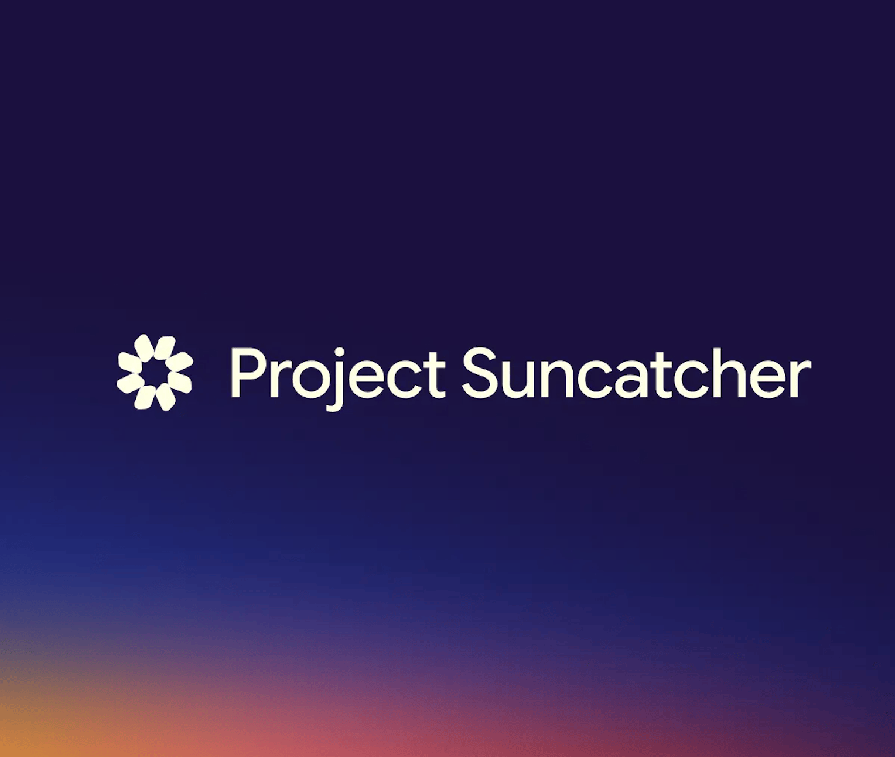

Google официально подтвердила партнёрство с Blue Origin: тяжёлая ракета New Glenn выполнит первый выделенный запуск для Project Suncatcher — долгосрочной программы «луношота» по выносу ИИ-инфраструктуры на орбиту. Цель — солнце-синхронная орбита, где солнечные панели получают свет почти непрерывно, а энергия для вычислений не ложится нагрузкой на наземные электросети. Запуск намечен на первый квартал 2029 года; точное число спутников и стоимость контракта обе компании не раскрыли.
Идея Suncatcher — соединить спутники с фирменными ускорителями Google (TPU) в единую вычислительную сеть. Первый прототип, построенный вместе с Planet, улетел на орбиту 1 октября 2026 года на ракете SpaceX. В конце октября инженеры передали на борт запрос, и модель Gemma 4 сочинила хайку о космосе прямо на спутнике — это подтвердило, что серверный TPU способен запускать модель и возвращать результат с орбиты. Следующий шаг — испытание двух связанных аппаратов в 2027 году, а групповой запуск на New Glenn станет масштабированием этой схемы.
Энергоснабжение — лишь половина задачи. В вакууме нет воздуха, поэтому тепло от чипов приходится отводить к радиаторам и рассеивать излучением, а радиация ставит вопрос о сроке службы электроники. Именно поэтому Google идёт поэтапно: сначала один аппарат, затем связка из двух, и только потом — группа спутников, каждый «рассчитан примерно как серверная стойка дата-центра», по официальной формулировке компании.
У SpaceX в этой истории две роли: компания Маска доставила на орбиту первый прототип Google и одновременно строит собственную орбитальную вычислительную систему. В январе 2026 года SpaceX подала в FCC заявку на сеть до миллиона спутников с оптическими каналами связи (это верхняя граница заявки, а не заказанные аппараты), а ориентиром первых демонстраций руководство называло конец 2027 года. Так что к моменту пуска New Glenn гонка «дата-центров в космосе» может выглядеть совсем иначе.